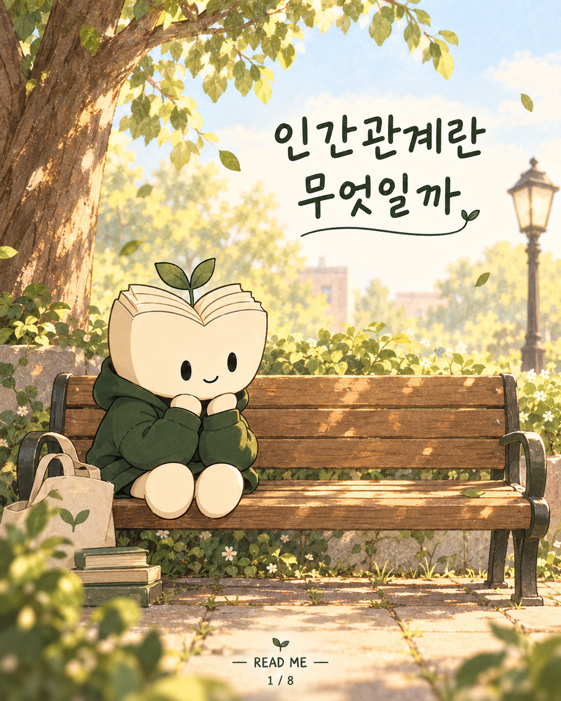
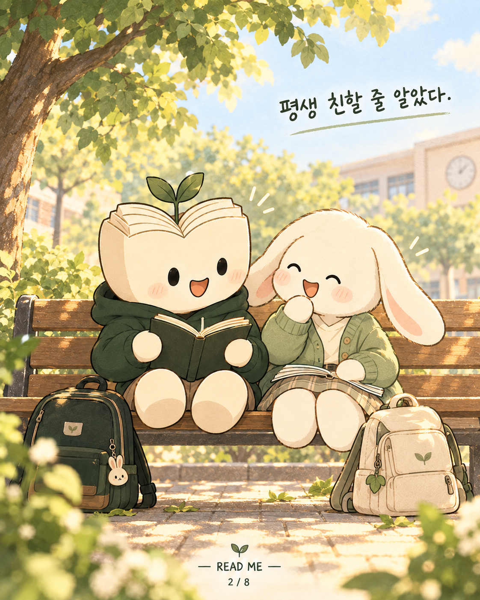
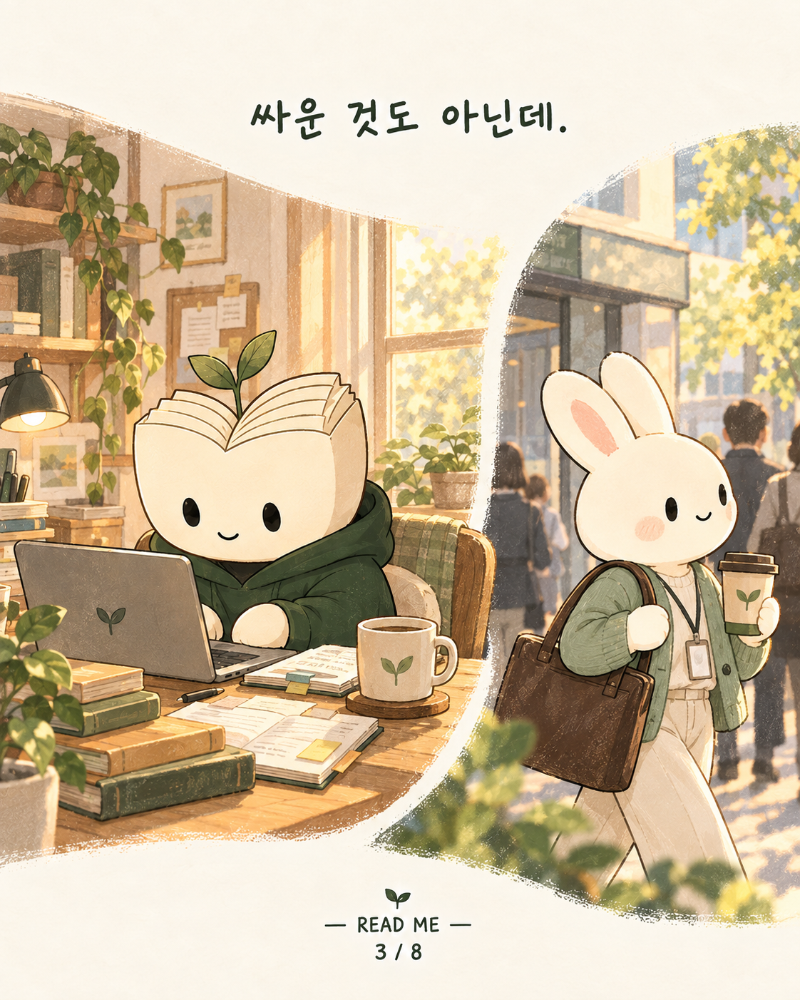
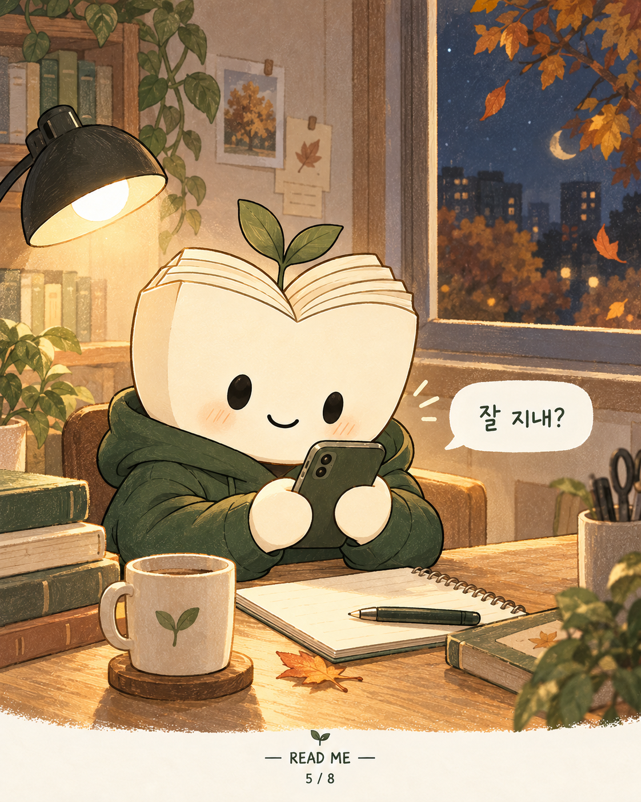
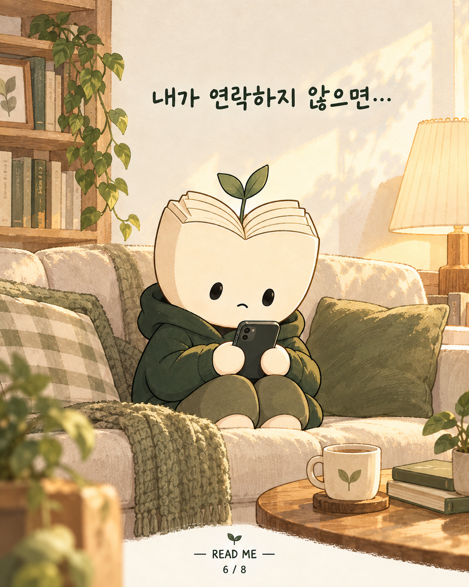
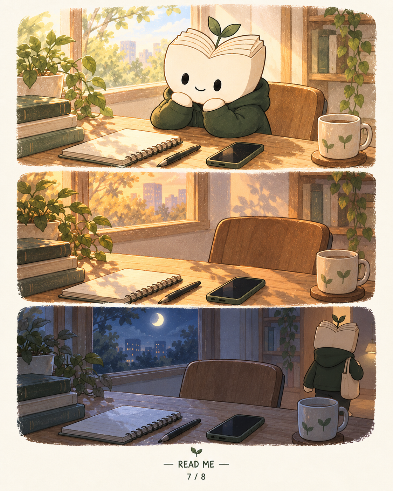
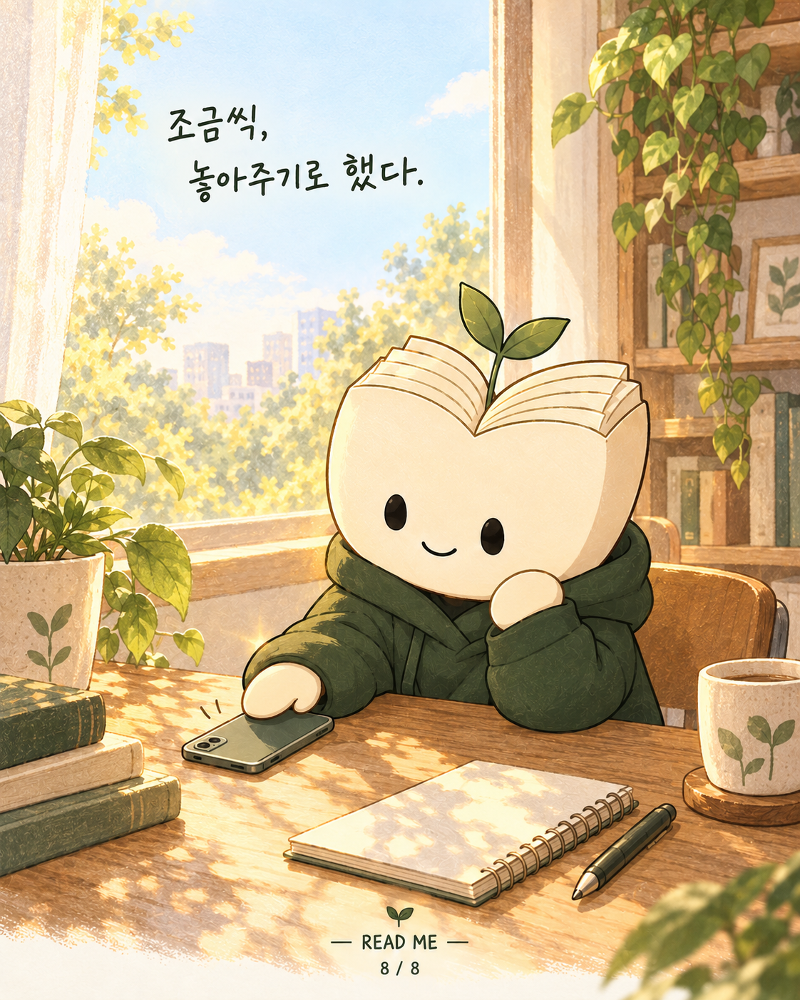

READ ME · 1편 개정 검토본
인간관계란 무엇일까
이미지 8장 + 게시물 캡션. 그림 속 문구와 장면을 따로 검토할 수 있습니다.
기존 10장 버전 보기 · 기존 1~8편 보기

1 / 8 · 인간관계란 무엇일까
2 / 8 · 평생 친할 줄 알았다.
3 / 8 · 싸운 것도 아닌데.4 / 8 · 오랜만에 볼래?
5 / 8 · 잘 지내?
6 / 8 · 내가 연락하지 않으면…
7 / 8 · 문구 없는 장면
8 / 8 · 조금씩, 놓아주기로 했다.휴대폰 속 짧은 메시지와 표정·장소·시간 경과는 원문 경험을 장면으로 풀어낸 각색입니다. 상대의 답장 여부나 의도를 단정하지 않았습니다.